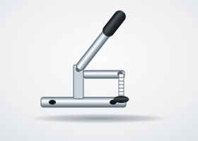
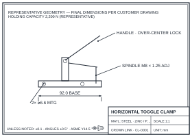

Toggle Clamp
Workholding clamps using an over-center linkage that locks under load without sustained operator force, in horizontal, vertical, push-pull, and latch styles. Essential fixtures hardware for welding jigs, assembly stations, and inspection fixtures.
Request Quote